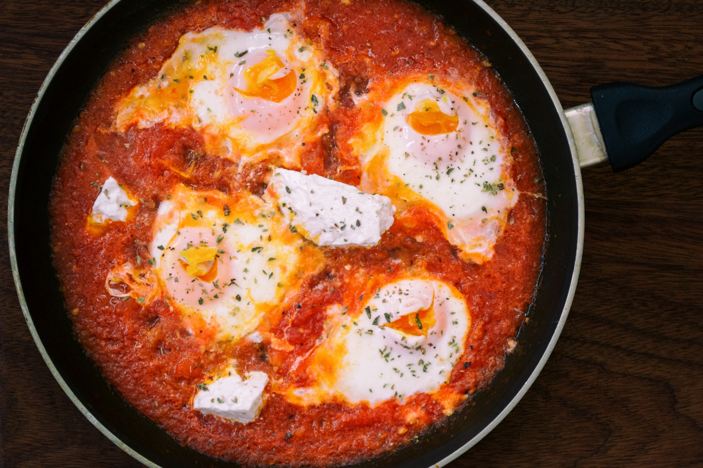

Shakshuka

Description
A delicious Middle Eastern dish made with eggs poached in a spicy tomato sauce.
Usually eaten as a breakfast dish. Very popular in Israel.
Ingredients
- 4 eggs
- 1 can (28 oz) crushed tomatoes
- 1 onion, diced
- 3 cloves garlic, minced
- 1 tsp cumin
- 1 tsp paprika
- Salt and pepper to taste
Steps
- Heat the olive oil in a large skillet over medium heat.
- Add the onion and cook until translucent.
- Add the garlic and cook for another minute.
- Add the crushed tomatoes, cumin, paprika, salt, and pepper.
- Simmer for 10 minutes, stirring occasionally.
- Make small wells in the sauce and crack an egg into each well.
- Cover and cook for 5-7 minutes, or until the egg whites are set.
Back to Recipes List